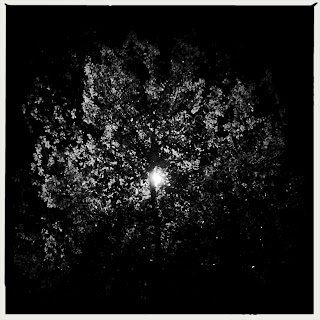

Recovered weblog entry
Backlit Sissoo

Trying out a few nighttime shots. Could have lined this one up a bit better, but the effect came through. Lens: John S
Film: AO BW

Recovered weblog entry

Trying out a few nighttime shots. Could have lined this one up a bit better, but the effect came through. Lens: John S
Film: AO BW